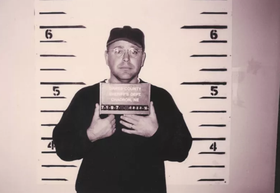
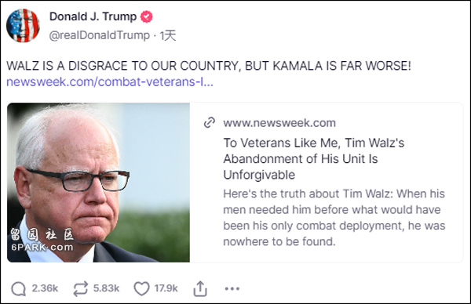

【文/观察者网 张菁娟】美国俄亥俄州联邦参议员万斯日前接受共和党副总统候选人提名后，他此前的言行频频被网民“翻旧账”。如今，明尼苏达州州长沃尔兹（Tim Walz）正式被确认为民主党副总统候选人后，他的“黑历史”也开始疯狂被起底。
超速、醉驾，大头照遭曝光
美国《新闻周刊》（Newsweek）7日公布了一张沃尔兹在内布拉斯加州因酒驾被捕后拍摄的大头照。照片中，他戴着眼镜和帽子。
据报道，这张照片拍摄于29年前，当时沃尔兹才31岁，在内布拉斯加州联盟中学任教。他一边担任足球教练，一边在内布拉斯加州陆军国民警卫军服役。

1995年，沃尔兹被拍大头照Newsweek
根据当地警方的记录，沃尔兹当时因在限速88公里的道路上超速行驶被警方拦下。警方靠近车窗盘查时闻到他身上带有明显酒味，便现场对他进行了酒精检测。经检测，沃尔兹的血液酒精含量远高于该州规定的数值。
报道称，沃尔兹最初被控酒驾和超速驾驶，后经协商达成认罪协议，减轻至鲁莽驾驶。沃尔兹因此支付了200美元（折合人民币约为1435元）的罚金，并被暂扣90天驾驶证。
《纽约时报》报道称，他的妻子当时告诉他，“你对他人负有责任。你不能做出愚蠢的选择”。
自那之后，沃尔兹就不再喝酒了，现在的他更钟情于低卡饮料“激浪轻怡”，他的共和党竞选对手万斯也是如此。
据报道，沃尔兹本人对这一“黑历史”并不避讳，他在2018年竞选明尼苏达州州长时提及此事时说：“我吸取了教训，这让我成为一个更好的人和更好的领导者。这是一个严重的错误，但它给我上了一节关于责任和后果的宝贵一课。”
沃尔兹和他的妻子Forbes
漠视大规模“疫情欺诈案”
也就是在2018年，沃尔兹以超过11个百分点的优势胜出，当选明尼苏达州州长。然而，他的首个任期因新冠疫情和明尼阿波利斯市警察“跪杀”弗洛伊德（George Floyd）等事件而蒙上阴影。
美国广播公司新闻网（ABC News）7日报道称，疫情期间，沃尔兹曾动用紧急权力、强制戴口罩及关闭企业等强硬做法，与共和党人产生巨大摩擦。
批评人士还指责其未能阻止一起令该州政府陷入困境的大规模“疫情欺诈案”。根据指控，至少有70人参与了这一案件，骗取资金超2.5亿美元（折合人民币约为17.9亿元）。目前已有20多人认罪或被定罪，仅有两人被判无罪，大多数人仍在等待审判。
据报道，今年6月公布的一份审计报告显示，这种情况可能是可以避免的。
审计员称，明尼苏达州立法审计员办公室不仅“未能在新冠大流行开始前和涉嫌欺诈开始前对该部门已知的警告信号采取行动”，而且其“做法和不作为还为欺诈创造了机会”。
不过，报告并未提及州长，也并未发现沃尔兹或其指数办公室有任何具体过失。
除此之外，沃尔兹还因在弗洛伊德之死引发明尼阿波利斯骚乱后，迟迟没有部署国民警卫队镇压暴力而招致批评。
据美国哥伦比亚广播公司新闻网（CBS News）和美国政治新闻网站“Axios”报道，沃尔兹在该市经历3日的纵火、抢劫后，才部署警卫作出反应。
2020年5月，弗洛伊德遭警察“跪压”致死视频截图
“逃兵、美国的耻辱”
现年60岁的沃尔兹出生于内布拉斯加州西点，17岁时加入美国陆军国民警卫队，参加过中东反恐“持久自由行动”，于2005年以指挥军士长身份退役，并开始竞选公职。
近日，关于其20年前离开陆军国民警卫队的争议声不断。据美国全国广播公司（NBC）8日报道，特朗普的竞选团队认为，沃尔兹当年退役是因为避免被派驻至伊拉克，并称其为“逃兵”。
报道称，沃尔兹于2005年5月正式退役，其所在部队在7月份接到了部署至伊拉克的通知。他在当年1月提交了竞选国会议员的文件，并于次月获得联邦选举委员会的认证。
美国共和党总统候选人特朗普本周三（8月7日）在其自创社交平台发文称沃尔兹为“美国的耻辱”。
同日，特朗普的竞选搭档万斯在一场新闻发布会上表示，沃尔兹退役并让他的部队在没有他的情况下前往伊拉克，“他因此受到了许多曾与他一起服役者的猛烈批评”。
“我认为，让你的部队做好去伊拉克的准备，做出你将履行承诺的承诺，然后在你真正要去之前退出，这是可耻的。”万斯说。
据报道，沃尔兹此前在竞选州长连任时也曾因此受到攻击，当时沃尔兹以一封由50名退伍军人签名的信作为回应，信中赞扬了他做出的贡献和领导能力。

特朗普在社交平台发文截图
目前，2024年美国总统大选两党的副总统候选人均已确定，不少媒体将两人进行了对比。
《纽约时报》称，在美国政坛的最高梯队中，沃尔兹的一生显得独树一帜，他与毕业于耶鲁法学院，并写了一本畅销回忆录的万斯很不一样。《华尔街日报》则指出，无论是从政治还是财务上看，这两位副总统候选人几乎没有共同之处。税务律师兼理财经理戈尔曼（Megan Gorman）表示，他们的财务状况是美国梦的两个版本，展现出对金钱和风险的不同处理方式。
根据过去的财务披露和纳税申报，沃尔兹除了退休金和一项大学储蓄计划外，没有房产，也没有多少投资。而万斯则是一位千万富翁，他拥有多套房产，并投资了黄金和加密货币等一系列资产。
最近多项民调结果显示，哈里斯目前追平了与特朗普的支持率，甚至已出现赶超之势。虽然美国全国公共广播公司（NPR）、公共广播协会（PBS）等媒体发布的联合民调显示，沃尔兹在美国民众中的知名度很低，有71%的受访者从未听说过沃尔兹或不确定如何评价他，但沃尔兹是否能给哈里斯带去加成，仍有很大的不确定性。